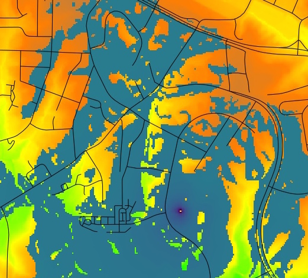
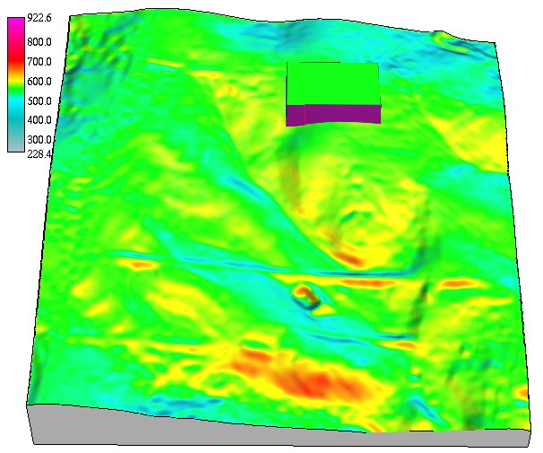

Viewshed analysis and solar radiation
Helena Mitasova
Learning objectives
- understand line of sight
- define viewshed, cumulative viewshed and viewscape
- explain components of solar radiation in complex terrain
- understand cast shadow and solar inclination angle
- explain cumulative solar radiation, solar energy potential
Line of sight
- Line of sight (LoS) analysis is used to identify points on the terrain surface
along a given line that are visible from an observer point on this line
- LoS analysis or ray-tracing is used for:
- 3D visualization
- visibility and viewshed analysis
- emitor-receptor systems design
taking into account decay of signal with distance, for example, to optimize locations of cell towers
Computing Line of sight
- Given a viewing point $A$ and a target $B$, $B$ is visible from $A$ if,
- all lines $AC_i$ are below the line $AB$
- where the points $C_i$ are a projection of the line $AB$ on the surface
Computing Line of sight
Given a viewing point $A$ and a target point $B$, $B$ is not visible from $A$ if,
- any line $AC_i$ is above the line $AB$
- where the points $C_i$ are a projection of $AB$ on the surface
Viewshed
- region defined by a set of grid cells (or triangles) visible from a given viewing point
- computed by applying LOS analysis from the viewing point to each cell within a given distance
- can be implemented for TIN or raster DEMs
- binary visibility map (yes/no)
- angle above/below horizontal plane
- relative elevation above/under horizontal plane
- shows what is visible from the given point or
- from where one can see the given point
Viewshed example 1
- Visibility analysis from buildings, 30m resolution DTM
- Relative height above the surface: 4 and 32 story building

Compute and compare land cover composition for each viewshed in the assignment
Viewshed example 2
- Visibility analysis from balcony of the Hunt library
- 10m resolution DTM and 1m resolution DSM

Viewshed example 2
- Visibility analysis from buildings, 1m resolution DSM
- Observer point at a balcony of the Hunt library and on upper floor of Jordan hall
Cumulative Viewshed
Set of grid cells visible from a set of points:
- find a path that has minimum or maximum visibility
- optimize distribution of signal sources to achieve the maximum coverage
- limit development to areas that are not visible - e.g. from the Blue Ridge Parkway
minimize visibility of wind turbines
Solar radiation
- controls surface energy and water balance
- affects atmospheric, biophysical and hydrologic processes
- provides a source of renewable energy
Surface net radiation
Spatially and temporally variable and depends on
- orientation of Earth relative to Sun (or position of Sun relative to a given point on Earth)
- topography: slope, aspect and shadowing
- clouds and other atmospheric properties
- surrounding surface properties (land cover)
Solar radiation components
Sun position
Given a date, time, and a location, for example:
- 2001.12.22, day number 356, time: 14:25:00
- long: -78.678856, lat: 35.736160, timezone: -5.000
sun position is given by
- solar azimuth (measured in horizontal plane ): 212.7934...
- solar altitude (sun angle above horizon): 23.1924
Sun position parameters
- 2001-12-22, day number 356, time: 14:25:00, long: -78.678856, lat: 35.736160, timezone: -5.000
- solar azimuth: 212.7934...
- solar altitude or inclination: 23.1924
- sun declination - angle between solar beam and earth equator: -23.4405
(winter solstice, sun above the Tropic of Capricorn)
- sunrise time (without refraction cor.): 07:26:30
- sunset time (without refraction cor.): 17:00:28
- atm. refraction correction: inclination > 0 before sunrise
Solar incidence angle
Angle between the terrain normal and solar beam
- solar beam: defined by solar inclination and azimuth
- terrain normal: 3D vector orthogonal to the plane tangent to terrain surface,
- terrain normal: function of slope and aspect,
horizontal projection of terrain normal is gradient $\nabla z = (f_x,f_y$
Modified from Batson et al., 1975, see also 8.1.8 in Hengl et al., 2008, Geomorphometry
or A.62 in Neteler et al., 2008 Appendix
Solar incidence angle map
Solar incidence angle for winter solstice around 2pm, lat=35.736160, including a building with cast shadow
Solar incidence angle dynamics
Solar incidence angle dynamics during summer and winter solstice for a small valley at 45 deg lat.
Solar incidence angle dynamics
Solar incidence angle dynamics during summer and winter solstice for a small valley at 45 deg lat.

Solar irradiance
Solar beam (direct) irradiance for inclined plane in $W/m^2$ is function of:
- solar incidence angle
- solar constant $[W/m^2]$
- atmospheric factors (clear sky):
- Linke turbidity factor (atm. turbidity due to aerosols - reduces direct radiation)
- Rayleigh optical thickness (thickness of clear atm., function of surface pressure)
- cloud cover
- computed as cumulative solar irradiance: daily $Wh/(m^2.day)$, monthly, seasonal, annual
Components of solar irradiance
Cumulative beam solar irradiance $[Wh/(m^2 day]$, diffuse and reflected irradiance
for day 356 (winter solstice) computed with 0.5hr time step

Winter and summer solar irradiance
Spatial pattern of cumulative direct beam solar irradiance $[Wh/(m^2 day)]$ for different days 356 and 180
Solar radiation duration
Spatial pattern of solar radiation duration $[hr]$ for different days 356 and 180
sunrise 4.8hr, sunset 19.20hr, sunrise 7.2hr, sunset 16.30hr
Solar radiation dynamics
Centennial Campus during winter solstice

Solar radiation dynamics
Centennial Campus during summer solstice

Summary
- geometry of line of sight and viewsheds
- viewshed and viescape applications
- sun position and solar radiation principles
- dynamics and spatial variability of solar radiation
- solar radiation examples
See also Supplemental material links